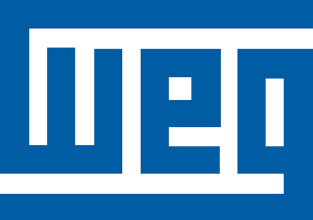

CENTROWEG
Análise de CRITICIDADE no CentroWEG
Garanta a máxima confiabilidade operacional e otimize a gestão dos ativos do CentroWEG através da avaliação rigorosa de criticidade dos equipamentos.

Importância na Manutenção
Entenda o impacto direto da criticidade nos planos preventivos.
Benefícios Operacionais
Veja como a classificação reduz custos e paradas não planejadas.